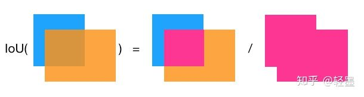
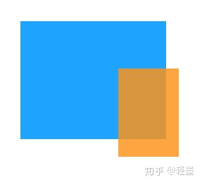
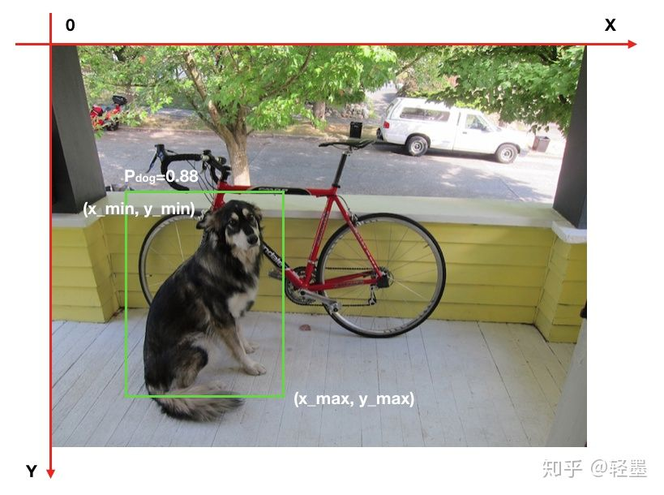
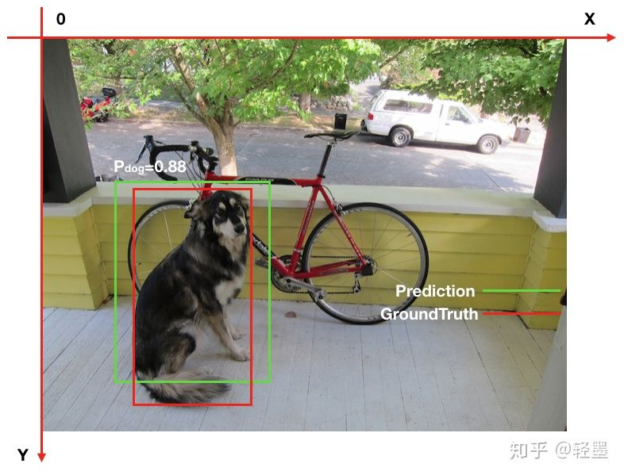
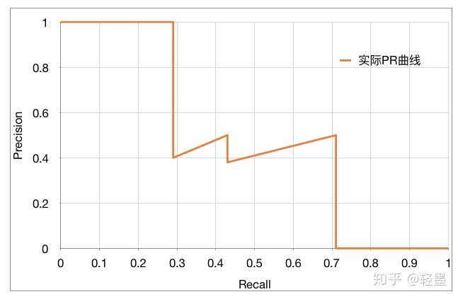
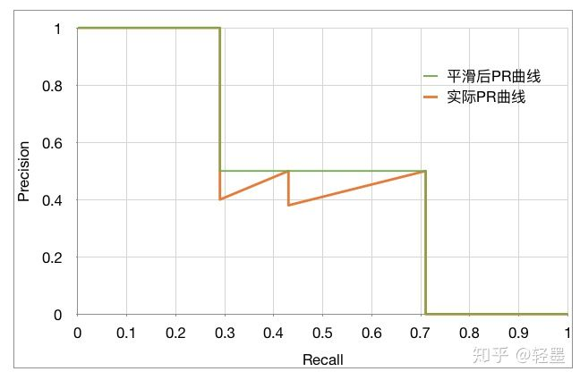

IoU, AP, mAP等对比
IoU, AP, mAP, mAP@0.5, mAP@[0.5: 0.95], Average mAP
TL;DR
- IoU：两个框框重叠部分面积/两个框框合并后的总面积
- AP：绘制Recall-Precision图，经过平滑后曲线的下面全面积。这个图的绘制方法是：按照每个预测结果的Confidence从上往下排列，先只取一个画出图上左上角第一个点，然后是只取前两个，直到取完。
- mAP：AP是针对某一个类的，而mAP是把各个类的AP做一个平均。
- mAP@0.5：当IoU阈值为0.5时的mAP。
- mAP@[0.5:0.95]：COCO要求IoU阈值在[0.5, 0.95]区间内每隔0.05取一次，这样就可以计算出10个类似于PASCAL的mAP，然后这10个还要再做平均。
查准率（Precision）和查全率（recall）
查准率（Precision）是指在所有预测为正例中真正例的比率，也即预测的准确性。
查全率（Recall）是指在所有正例中被正确预测的比率，也即预测正确的覆盖率。
一个样本模型预测按正确与否分类如下：
真正例：
真反例：
假正例：
假反例：
则，查准率和查全率计算公式：
查准率：
查全率：
交并比IoU(Intersection over union)
交并比IoU衡量的是两个区域的重叠程度，是两个区域重叠部分面积占二者总面积（重叠部分只计算一次）的比例。如下图，两个矩形框的IoU是交叉面积（中间图片红色部分）与合并面积（右图红色部分）面积之比。
IoU计算重叠度
这里需要注意的是IoU=0.5，并不意味着每个框刚好有50%与另外一个框交叉部分，而是每个框大约有2/3被交叉。有点反直觉。
我当初看到IoU，非常疑惑为啥不按交叉面积占每个框的比例（IoA 也即Intersection over Area）取大值计算重叠度，更符合直觉。其实这种算法只反应小图片的被遮盖度，并不能反映互相之间的重叠度，一般情况下不可取。如下图，橙色部分较小，IoA很大，但对于蓝色部分，IoA就很小，只按橙色取IoA显然有失偏驳。
IoA计算重叠度
单类别AP(Average Precision)的计算
物体检测中的每一个预测结果包含两部分，预测框（bounding box）和置信概率（Pc）。bounding box通常以矩形预测框的左上角和右下角的坐标表示，即x_min, y_min, x_max, y_max，如下图。置信概率Pc有两层意思，一是所预测bounding box的类别，二是这个类别的置信概率，如下图中的P_dog=0.88，代表预测绿色框为dog，并且置信概率为88%。

那么，怎么才叫预测正确呢？显而易见的，必须满足两个条件：
- 类别正确且置信度大于一定阀值（P_threshold）
- 预测框与真实框（ground truth）的IoU大于一定阀值（IoU_threshold）
如下图，假如P_threshold=0.6，IoU_threshold=0.5，则绿色框预测正确，记为True Positive。

而在衡量模型性能时，IoU_threshold先取一个定值，然后综合考虑各种P_threshold取值时的性能，进而得到一个与P_threshold选定无关的模型性能衡量标准。
AP是计算单类别的模型平均准确度。
假如目标类别为Dog，有5张照片，共包含7只Dog，也即GT（Ground Truth）数量为7，经模型预测，得到了Dog的10个预测结果，选定IoU_threshold=0.5，然后按confidence从高到低排序，如下图。其中，BB表示Bounding Box序号，GT=1表示有GT与所预测的Bounding Box的IoU>=IoU_threshold，Bounding Box序号相同代表所对应的GT是同一个。
| Rank | BB | confidence | GT |
|---|---|---|---|
| 1 | BB1 | 0.9 | 1 |
| 2 | BB2 | 0.8 | 1 |
| 3 | BB1 | 0.8 | 1 |
| 4 | BB3 | 0.5 | 0 |
| 5 | BB4 | 0.4 | 0 |
| 6 | BB5 | 0.4 | 1 |
| 7 | BB6 | 0.3 | 0 |
| 8 | BB7 | 0.2 | 0 |
| 9 | BB8 | 0.1 | 1 |
| 10 | BB9 | 0.1 | 1 |
因此，如果设置P_threshold=0，则有 TP=5 (BB1, BB2, BB5, BB8, BB9)，FP=5 (重复检测到的BB1也算FP)。除了表里检测到的5个GT以外，我们还有2个GT没被检测到，因此: FN = 2.
然后依次从上到下设定对应的rank为正反分界线，此rank之前（包含此rank）的预测为正，此rank之后的预测为反，然后计算对应的Precision和Recall：
1 | rank=1 precision=1.00 and recall=0.14 |
比如rank=4时，TP=2 (BB1, BB2)，则
1 | Precision=2/4=0.5，Recall=TP/GT=2/7=0.29 |
可以看出，随着预测正反分割线的向下移动，Recall稳步变大，Precision整体减小，局部上下跳动，PR曲线如下图：

AP(Average Precision)的计算基本等同于计算PR曲线下的面积，但略有不同。需要先将PR曲线平滑化。
方法是，查全率r对应的查准率p，取查全率大于等于r时最大的查准率p。即，
平滑后的曲线如下图中的绿色曲线：

对于AP(Average Precision)的计算有两种方法：
1. VOC2010之前的方法
AP =（平滑后PR曲线上，Recall分别等于0，0.1，0.2，… , 1.0等11处Precision的平均值）。
这里则有：
1 | AP = (1 + 1 + 1 + 0.5 + 0.5 + 0.5 + 0.5 + 0.5 + 0 + 0 + 0) / 11 = 0.5 |
2. VOC2010及以后的方法
AP=平滑后PR曲线下包围的面积
这里则有：
1 | AP = (0.14-0) * 1 + (0.29-0.14) * 1 + (0.43-0.29) * 0.5 + (0.57-0.43) * 0.5 + (0.71-0.57) * 0.5 + (1-0.71) * 0 = 0.5 |
这里两种方案得出的AP值相同，但通常是不同的。
需要注意的是上述AP的计算并没有显式设定P_threshold，而是通过从上到下依次指定每一个rank为正反分界线来变相的反映P_threshold不同取值。
mAP的计算
上述计算的AP只是针对dog这个类别，物体检测通常有多个类别，模型性能肯定是多个类别准度的综合度量。
1. VOC数据集中的mAP
VOC数据集中的mAP计算的是IoU_threshold=0.5时各个类别AP的均值。
2. COCO数据集中的mAP
检测是否正确有两个超参数，P_threshold和IoU_threshold。AP是固定了IoU_threshold，再综合考虑各个P_threshold下的模型平均准确度。
VOC认为IoU_threshold固定一个单值0.5即可，COCO则认为固定了IoU_threshold的取值，无法衡量IoU_threshold对模型性能的影响。
比如，
A模型在IoU_threshold=0.5时，mAP=0.4。
B模型在IoU_threshold=0.7时，mAP同样为0.4。
依据VOC的标准，AB模型的性能一样，但显然B模型的框更准，性能更优。
COCO在VOC标准的基础上，取IoU_threshold=0.5，0.55， 0.6，… , 0.95时各个mAP的均值。